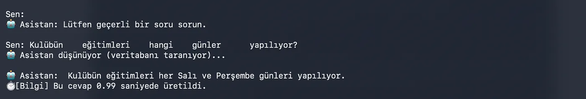

Yazı Hakkında Ön Söz
Preface to the Article
Tekrardan selam dostum! Yazı serimizin ilk iki bölümünde adeta sıfırdan bir yapay zeka ekosistemi inşa ettik: Metinlerimizi parçalara ayırdık, SQLite üzerinde akıllı bir vektör hafızası kurduk, qwen3 ile kelimeleri matematiğe döktük ve phi-3.5-mini ile terminalde tıkır tıkır sohbet eden yerel bir asistan çıkardık ortaya.
Ancak bir yazılımı geliştirirken fark ediyorsun ki, her şeyin ilk başta düzgün çalışması sistemin kusursuz olduğu anlamına gelmiyor. Gerçek bir projede asıl emek, kodun yazıldığı anda değil, onu uç senaryolarla test edip zayıf noktalarını bulduğunda başlıyor.
İşte bu final bölümünde sistemi gerçek dünya senaryolarıyla test edip kırmaya çalışacağız.
Phase 3: Sistemi Terletmek: Dayanıklılık ve Güvenilirlik Testleri
Phase 3: Making the System Sweat: Resilience and Reliability Tests
Her şeyin harika çalıştığı o güvenli limandan çıkıp gerçek dünya senaryolarına geçiyoruz. Bu aşamada asistanımızı hem beklenmeyen kullanıcı hatalarına hem de yapay zekanın en büyük hastalığı olan “uydurmaya” karşı test edeceğiz.
Adım 1: Boşluk ve Anlamsız Girdiler (Asistanı Çökertme Girişimi)
Step 1: Empty and Meaningless Inputs (Attempting to Crash the Assistant)
Sistemi ilk test ettiğimizde fark ettik ki, kullanıcı bazen enter tuşuna boş boş basabiliyor veya klavyeye rastgele karakterler (asdasdasdasd) girebiliyor veya da fazladan gereksiz space tuşuna basıp cümlenin anlamını bozabiliyordu. Eski haliyle bu durum, embedding modelinin girdiyi işleyemeyip ValueError fırlatmasına ve programın aniden kapanmasına yol açıyordu.
Bunu engellemek için app.py içine ufak ama hayat kurtaran bir girdi doğrulama mekanizması ekledik:
user_input = input("Sen: ")
# Kullanıcı boş enter'a bastıysa veya sadece boşluk bıraktıysa sistemi korumaya al
if not user_input.strip():
print("🤖 Asistan: Lütfen geçerli bir soru sorun.\n")
continueBu minik .strip() dokunuşu sayesinde asistanımız artık boş girdilere karşı dayanıklı bir CLI arayüzüne kavuştu. Boşluklara karşı hata yapmıyor ve cümleyi normal akışında anlayabiliyor!

Adım 2: Halüsinasyon Direnci Testi
Step 2: Hallucination Resistance Test
RAG mimarisinin bize sunduğu en büyük avantaj, modelin kafasına göre hikaye uydurmasını engellemektir. Önceki fazlarda halüsinasyon riskini azaltmayı hedefleyen işlemler yapmıştık. Peki bu pratikte ne kadar başarılı? Bunu test etmek için asistanımıza hafızasında kesinlikle olmayan bir tuzak soru sorduk:
“Siber Güvenlik Kulübü’nün başkanı kimdir?”
İnternete erişimi olan veya geniş bir genel bilgi tabanıyla çalışan bir model, eğitim verisindeki bilgilerden hareketle bir cevap üretmeye çalışabilir. Bizim sistemimizde ise modelin yalnızca sağlanan bağlam üzerinden cevap vermesi için daha katı bir yaklaşım kullandık:
“I do not have this information.”

İşte bu noktada modelin bilmediği konularda dürüst kalabilmesi, özellikle kurumsal veya kişisel bilgi asistanlarında güvenilirliği artıran en kritik detaylardan biri. Bilgiyi uydurmak yerine sınırını bilmesi sistemin kararlılığını gösteriyor.
Adım 3: Apple Silicon Üzerinde Hız Testi
Step 3: Speed Test on Apple Silicon
Bütün bu işlemler (vektör arama, kosinüs benzerliği hesaplama, modelin bağlamı okuyup cevap üretmesi) tamamen benim MacBook Pro’mun üzerinde, hiçbir bulut API’sine gitmeden çalışıyor. Peki bu yerel işlem tam olarak kaç saniye sürüyor?
Sisteme eklediğimiz mini bir zaman sayacı (time kütüphanesi) ile bunu net olarak ölçtük:
- Doğrudan Bilgi Çekme Sorusu: ~0.74 saniye
- Mantıksal Çıkarım / Yorumlama Sorusu: ~1.09 saniye
- Bağlam Dışı Soruları Reddetme (Refusal): ~0.38 saniye
Harici API çağrılarına ihtiyaç duymadığımız için internet kaynaklı ağ gecikmelerini ortadan kaldırdık ve veriyi parça parça işlediğimiz (RAG) için yanıt sürelerimiz 1 saniyenin bile altında seyrediyor. Donanımın gücü ile yazılım optimizasyonu birleşince sistem beklenen performansın da üzerine çıkıyor!
Projenin Sonu: Github Deposu ve Açık Kaynak Yolculuğu
The End of the Project: GitHub Repo and Open Source Journey
6 hafta boyunca adım adım ördüğümüz; %100 çevrimdışı çalışan, gizlilik odaklı, sıfır halüsinasyonlu bu akıllı asistan projesini nihayet tamamladık. Projenin tüm kodlarını, mimari detaylarını ve projeyi kendi bilgisayarınızda kurup çalıştırabilmeniz için İngilizce-Türkçe çift dilli README dokümantasyonunu GitHub’da açık kaynak olarak yayınladım.
Eğer siz de verilerinizin cihazınızdan dışarı çıkmadığı, tamamen size ait yerel bir yapay zeka asistanı kurmak istiyorsanız, repoyu inceleyebilir ve kendi terminalinizde test edebilirsiniz.
Bu yaz kampı serüveninde benimle birlikte kod yazan, hataları ayıklayan ve sistemi çıkmazlardan döndüren herkese çok teşekkürler.
Yeni projelerde, yeni kod satırlarında görüşmek üzere, takipte kalın! 🚀